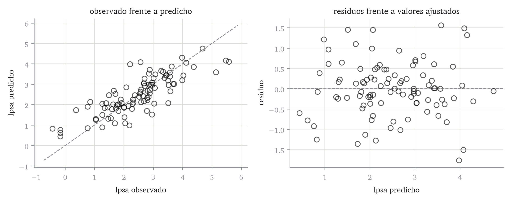

![]()

3 Modelos lineales con muchas variables
Matrices, gradientes y una implementación reutilizable
Abre el cuaderno de esta página en Google Colab. Lo primero, Archivo → Guardar una copia en Drive.
De una recta a muchas variables predictoras
En el capítulo anterior aprendimos a ajustar una recta con una sola variable predictora. Pero para predecir el precio de una vivienda, por ejemplo, podemos disponer de su superficie, su antigüedad y su número de habitaciones. Queremos usar esa información conjuntamente.
El criterio no cambia: seguiremos minimizando el riesgo cuadrático empírico. Lo que cambia es la forma de escribir las predicciones y el gradiente. Las matrices permitirán hacer los mismos cálculos con cualquier número de variables predictoras.
Código
import torch
from matplotlib import pyplot as plt
torch.manual_seed(0)
n_plano = 40
X_plano = torch.randn(n_plano, 2)
w_plano = torch.tensor([1.0, 1.0, 0.8])
ajuste_plano = w_plano[0] + X_plano @ w_plano[1:]
y_plano = ajuste_plano + 0.9 * torch.randn(n_plano)
fig = plt.figure(figsize=(6, 4.4))
ax = fig.add_subplot(111, projection="3d")
for eje in (ax.xaxis, ax.yaxis, ax.zaxis):
eje.pane.set_facecolor("white")
eje.pane.set_edgecolor("#dcdcd8")
ax.grid(False)
rejilla_1, rejilla_2 = torch.meshgrid(
torch.linspace(-2.6, 2.6, 9), torch.linspace(-2.6, 2.6, 9),
indexing="ij",
)
ax.plot_wireframe(
rejilla_1.numpy(), rejilla_2.numpy(),
(w_plano[0] + w_plano[1] * rejilla_1 + w_plano[2] * rejilla_2).numpy(),
color="#ff5700", lw=0.6, alpha=0.75,
)
for i in range(n_plano):
ax.plot(
[X_plano[i, 0].item()] * 2, [X_plano[i, 1].item()] * 2,
[y_plano[i].item(), ajuste_plano[i].item()],
color="#8b8e95", lw=1.0,
)
ax.scatter(
X_plano[:, 0].numpy(), X_plano[:, 1].numpy(), y_plano.numpy(),
color="black", s=16, depthshade=False,
)
ax.set_xlabel("$x_1$", labelpad=-4)
ax.set_ylabel("$x_2$", labelpad=-4)
ax.set_zlabel("$y$", labelpad=-6)
ax.tick_params(labelsize=7, pad=-1)
ax.view_init(elev=16, azim=-62)
plt.tight_layout()El modelo lineal-gaussiano múltiple
La extensión natural del modelo con el que hemos trabajado al caso con \(p\) variables predictoras \(x_1, x_2, \ldots, x_{p}\) es la siguiente.
Definición 3.1 (Modelo lineal-gaussiano múltiple) Dadas \(p\) variables predictoras, el modelo lineal-gaussiano múltiple supone que las respuestas son independientes y
\[ y_i\,\vert\,\mathbf{x}_i \sim\mathcal{N}\Bigl( w_0+\sum_{j=1}^{p}w_jx_{ij},\; \sigma^2 \Bigr), \qquad i=1,\ldots,n, \tag{3.1}\]
donde \(x_{ij}\) es el valor de la variable predictora \(j\) en la observación \(i\) y \(\sigma>0\).
Para escribir el modelo de forma más compacta introducimos la siguiente notación.
Definición 3.2 (Vector de variables predictoras, vector de coeficientes y convenio de la constante) El vector de variables predictoras de la observación \(i\) y el vector de coeficientes son
\[ \mathbf{x}_i=(x_{i0},x_{i1},\ldots,x_{ip})^{\mathsf{T}}\in\mathbb{R}^{p+1}, \qquad \boldsymbol{w}=(w_0,w_1,\ldots,w_{p})^{\mathsf{T}}\in\mathbb{R}^{p+1}, \]
donde se toma \(x_{i0}=1\) para toda observación. Con ese convenio, la media de Ecuación 3.1 es el producto escalar de los dos vectores:
\[ \mathbf{x}_i^{\mathsf{T}}\boldsymbol{w} =\left\langle \mathbf{x}_i, \boldsymbol{w} \right\rangle =\sum_{j=0}^{p}w_jx_{ij} =w_0+\sum_{j=1}^{p}w_jx_{ij} =\hat{y}_i. \tag{3.2}\]
El modelo entero se escribe entonces \(y_i\,\vert\,\mathbf{x}_i\sim\mathcal{N}\bigl(\mathbf{x}_i^{\mathsf{T}}\boldsymbol{w},\sigma^2\bigr)\), con independencia de cuántas variables predictoras haya.
Con \(p=1\) el convenio devuelve la recta del capítulo anterior: \(\mathbf{x}_i^{\mathsf{T}}\boldsymbol{w}=w_0+w_1x_i\), que es Ecuación 1.4.
Por ejemplo, con dos predictoras, \(\mathbf{x}_i=(1,2,3)^{\mathsf{T}}\) y \(\boldsymbol{w}=(4,1,-1)^{\mathsf{T}}\), la predicción es \(4+1\cdot2-1\cdot3=3\). El primer uno de \(\mathbf{x}_i\) permite incluir el intercepto en la misma multiplicación.
Log-verosimilitud y error cuadrático medio
Habiendo definido el modelo, para aprender sus parámetros hace falta un criterio. Este se obtiene igual que en el capítulo anterior: se escribe la log-verosimilitud del modelo y se aisla la parte de ella que depende de \(\boldsymbol{w}\).
El riesgo que vamos a minimizar es
\[ \hat{R}(\boldsymbol{w}) =\frac{1}{n}\sum_{i=1}^{n}\bigl(y_i-\mathbf{x}_i^{\mathsf{T}}\boldsymbol{w}\bigr)^2. \tag{3.3}\]
Ejercicio 3.1 (De la log-verosimilitud al riesgo cuadrático) Fijados los vectores de predictoras \(\mathbf{x}_1,\ldots,\mathbf{x}_{n}\), las respuestas son independientes y \(y_i\,\vert\,\mathbf{x}_i\sim\mathcal{N}(\mathbf{x}_i^{\mathsf{T}}\boldsymbol{w},\sigma^2)\), con \(\sigma>0\) conocido.
- Escribe la log-verosimilitud de la muestra, partiendo de la densidad normal.
- Comprueba que \[ \ell(\boldsymbol{w},\sigma)=C-\frac{n}{2\sigma^2}\hat{R}(\boldsymbol{w}), \qquad C=-n\log(\sigma\sqrt{2\pi}), \] donde \(\hat{R}\) es el riesgo de Ecuación 3.3. ¿Depende \(C\) de \(\boldsymbol{w}\)?
- Deduce por qué maximizar la log-verosimilitud equivale a minimizar \(\hat{R}\). Indica dónde se usa que \(\sigma\) es positivo y fijo.
Nuestro objetivo será pues buscar:
\[ \hat{\boldsymbol{w}}\in\mathop{\mathrm{arg\,min}}_{\boldsymbol{w}}\hat{R}(\boldsymbol{w}), \]
con \(\hat{R}\) dado por Ecuación 3.3, que es el riesgo empírico de Definición 2.4 con pérdida cuadrática.
Todavía se puede simplificar más la notación. En Ecuación 3.3 quedan un sumatorio sobre las \(n\) observaciones y, dentro de cada sumando, un producto escalar sobre las \(p+1\) coordenadas. Los dos desaparecen si reunimos las observaciones en una matriz.
La matriz de diseño
Empecemos por recordar cómo se mide el tamaño de un vector.
Definición 3.3 (Norma euclídea) La norma euclídea de un vector \(\mathbf v=(v_1,\ldots,v_d)^{\mathsf{T}}\in\mathbb{R}^d\) es el número no negativo \(\left\lVert \mathbf v \right\rVert\) definido por
\[ \left\lVert \mathbf v \right\rVert^2 =\mathbf v^{\mathsf{T}}\mathbf v =\sum_{j=1}^{d}v_j^2 . \tag{3.4}\]
La norma al cuadrado de un vector es, por tanto, la suma de los cuadrados de sus componentes. Escribiremos siempre \(\left\lVert \mathbf v \right\rVert\) sin subíndice, y siempre significará esto.
Reunimos ahora las \(n\) observaciones en un único objeto.
Definición 3.4 (Matriz de diseño) La matriz de diseño de la muestra es la matriz que tiene por filas los vectores de predictoras traspuestos:
\[ \mathbf{X}=\begin{pmatrix}\mathbf{x}_1^{\mathsf{T}}\\ \mathbf{x}_2^{\mathsf{T}}\\ \vdots\\ \mathbf{x}_{n}^{\mathsf{T}}\end{pmatrix} =\begin{pmatrix} 1 & x_{11} & \cdots & x_{1p}\\ 1 & x_{21} & \cdots & x_{2p}\\ \vdots & \vdots & & \vdots\\ 1 & x_{n1} & \cdots & x_{np} \end{pmatrix} \in\mathbb{R}^{n\times(p+1)} . \]
Cada fila es una observación y cada columna una variable predictora. La primera columna es de unos, por el convenio de Definición 3.2, y es la que representa el intercepto.
El producto de una matriz por un vector se define de modo que la componente \(i\) del resultado es el producto escalar de la fila \(i\) por el vector. Aplicado a \(\mathbf{X}\) y a \(\boldsymbol{w}\), eso da
\[ \mathbf{X}\boldsymbol{w} =\begin{pmatrix}\mathbf{x}_1^{\mathsf{T}}\boldsymbol{w}\\ \mathbf{x}_2^{\mathsf{T}}\boldsymbol{w}\\ \vdots\\ \mathbf{x}_{n}^{\mathsf{T}}\boldsymbol{w}\end{pmatrix} =\begin{pmatrix}\hat{y}_1\\ \hat{y}_2\\ \vdots\\ \hat{y}_{n}\end{pmatrix} \in\mathbb{R}^{n}. \tag{3.5}\]
El objeto \(\mathbf{X}\boldsymbol{w}\) es el vector de las \(n\) predicciones del modelo.
Código
AZUL, GRIS, NARANJA = "#151f6c", "#8b8e95", "#ff5700"
def celda(ax, columna, fila, texto, color=GRIS, relleno="white"):
ax.add_patch(plt.Rectangle(
(columna, -fila - 1), 1, 1,
facecolor=relleno, edgecolor=color, lw=0.9,
))
ax.text(columna + 0.5, -fila - 0.5, texto, ha="center", va="center",
fontsize=8, color=color)
# En las etiquetas de figura solo cabe LaTeX corriente: matplotlib no conoce
# las macros de _macros.tex.
diseno = [
["1", r"$x_{11}$", r"$x_{12}$", r"$\cdots$", r"$x_{1p}$"],
["1", r"$x_{21}$", r"$x_{22}$", r"$\cdots$", r"$x_{2p}$"],
[r"$\vdots$"] * 5,
["1", r"$x_{n1}$", r"$x_{n2}$", r"$\cdots$", r"$x_{np}$"],
]
fig, ax = plt.subplots(figsize=(9, 3.6))
for f, fila in enumerate(diseno):
for c, texto in enumerate(fila):
if c == 0:
celda(ax, c, f, texto, NARANJA, "#fff1ea")
else:
celda(ax, c, f, texto)
ax.text(2.5, 0.6,
r"$\mathbf{X} \in \mathbb{R}^{n\times(p+1)}$",
ha="center", fontsize=10, color=AZUL)
ax.annotate("", xy=(0.5, -4.1), xytext=(0.5, -4.7),
arrowprops=dict(arrowstyle="-|>", color=NARANJA, lw=1.0,
mutation_scale=8))
ax.text(0.5, -4.8, "columna\nde unos", ha="center", va="top", fontsize=8,
color=NARANJA)
ax.text(6.0, -2.2, r"$\times$", ha="center", fontsize=13, color=AZUL)
for f, texto in enumerate([r"$w_0$", r"$w_1$", r"$\vdots$", r"$w_p$"]):
celda(ax, 6.6, f, texto, AZUL)
ax.text(7.1, 0.6, r"$\mathbf{w}$", ha="center", fontsize=10, color=AZUL)
ax.text(8.4, -2.2, r"$=$", ha="center", fontsize=13, color=AZUL)
for f, texto in enumerate([r"$\hat{y}_1$", r"$\hat{y}_2$", r"$\vdots$",
r"$\hat{y}_n$"]):
celda(ax, 9.0, f, texto, NARANJA)
ax.text(9.5, 0.6, r"$\mathbf{X}\mathbf{w}$", ha="center", fontsize=10,
color=NARANJA)
ax.set(xlim=(-0.5, 10.5), ylim=(-6.0, 1.3))
ax.set_aspect("equal", adjustable="box")
ax.set_axis_off()
plt.tight_layout()
Con esto, podemos simplificar la notación.
Proposición 3.1 (El riesgo cuadrático empírico en forma matricial) Para el modelo lineal con matriz de diseño \(\mathbf{X}\),
\[ \hat{R}(\boldsymbol{w}) =\frac{1}{n}\sum_{i=1}^{n}\bigl(y_i-\mathbf{x}_i^{\mathsf{T}}\boldsymbol{w}\bigr)^2 =\frac{1}{n}\left\lVert \mathbf{X}\boldsymbol{w}-\mathbf{y} \right\rVert^2 . \tag{3.6}\]
Demostración. Por Ecuación 3.5, la componente \(i\) del vector \(\mathbf{X}\boldsymbol{w}-\mathbf{y}\) es \(\mathbf{x}_i^{\mathsf{T}}\boldsymbol{w}-y_i\). Por Ecuación 3.4, su norma al cuadrado es la suma de los cuadrados de esas componentes,
\[ \left\lVert \mathbf{X}\boldsymbol{w}-\mathbf{y} \right\rVert^2 =\sum_{i=1}^{n}\bigl(\mathbf{x}_i^{\mathsf{T}}\boldsymbol{w}-y_i\bigr)^2 =\sum_{i=1}^{n}\bigl(y_i-\mathbf{x}_i^{\mathsf{T}}\boldsymbol{w}\bigr)^2 , \]
donde la última igualdad se debe a que un cuadrado no distingue el signo. Dividiendo por \(n\) se obtiene Ecuación 3.6.
Como \(1/n\) es una constante positiva, por Lema 2.1 no cambia dónde está el mínimo, y se puede omitir. El problema de aprendizaje es, por tanto, el siguiente:
\[ \hat{\boldsymbol{w}}\in\mathop{\mathrm{arg\,min}}_{\boldsymbol{w}}\left\lVert \mathbf{X}\boldsymbol{w}-\mathbf{y} \right\rVert^2 . \tag{3.7}\]
Omitir el factor \(1/n\) no cambia el ajuste, pero sí el valor del criterio y de su gradiente. Para calcular riesgos y dar pasos de descenso seguiremos usando la media, como en Ecuación 3.6.
Para ilustrar la resolución de este problema, trabajaremos con datos simulados de \(p=5\) variables predictoras, donde conocemos los coeficientes que los han generado.
Código
# comprobaremos igualdades numéricas
torch.set_default_dtype(torch.float64)
torch.manual_seed(42)
n = 100
p = 5
w_verdadero = torch.tensor([1.0, 2.0, -1.5, 0.0, 0.5, 3.0])
# con la columna de unos
X = torch.cat([torch.ones(n, 1), torch.randn(n, p)], dim=1)
y = X @ w_verdadero + 0.5 * torch.randn(n)
# Estilo de los puntos de datos, reutilizado en todas las figuras
# del capitulo: circulos negros sin relleno y algo transparentes.
kw_puntos = dict(color="black", facecolors="none", s=40, alpha=0.65)El tercer coeficiente verdadero es cero: la variable predictora \(x_3\) no influye en la respuesta. La hemos puesto para tener a mano el caso de una variable que no aporta nada.
print("X: ", tuple(X.shape))
print("XtX: ", tuple((X.T @ X).shape))
print("Xw: ", tuple((X @ w_verdadero).shape))X: (100, 6)
XtX: (6, 6)
Xw: (100,)Conviene además dar nombre al vector que aparece dentro de la norma.
Definición 3.5 (Vector de residuos) El vector de residuos de los parámetros \(\boldsymbol{w}\) es
\[ \mathbf{r}(\boldsymbol{w})=\mathbf{y}-\mathbf{X}\boldsymbol{w}\in\mathbb{R}^{n}, \]
cuya componente \(i\) es el residuo \(r_i(\boldsymbol{w})\) de Definición 2.1. Con esto, \(\hat{R}(\boldsymbol{w})=\frac{1}{n}\left\lVert \mathbf{r}(\boldsymbol{w}) \right\rVert^2\).
Pasemos al código. Recordemos del capítulo anterior el reparto en una clase para el modelo, que guarda los parámetros y sabe predecir, y una función suelta para la pérdida. torch escribe el producto matriz por vector con el operador @, de modo que Ecuación 3.5 se traduce literalmente.
- 1
- La clase y el método se llaman igual que en el capítulo anterior, y los nombres están elegidos para coincidir con los de las librerías que usaremos después. Volveremos sobre ello al final del capítulo.
- 2
-
Es la única línea que cambia respecto al capítulo anterior, donde ponía
self.w[0] + self.w[1] * x. Con \(p=1\) y la columna de unos, las dos hacen lo mismo.
Las formas tienen que casar. En torch, un vector de \(n\) números y una matriz de \(n\times1\) son objetos distintos, aunque contengan lo mismo. Si y tiene forma (n,) y las predicciones forma (n, 1), la resta y - y_pred no da error: torch estira las dos formas hasta hacerlas compatibles y devuelve una matriz (n, n) con todas las diferencias cruzadas, la de cada respuesta con cada predicción. Al promediar esa matriz sale un número perfectamente plausible, calculado con \(n^2\) diferencias en lugar de \(n\), y sin ningún aviso.
Código
modelo = LinearRegression(n_parametros=p + 1)
modelo.w = w_verdadero.clone()
print("correcta:", (y - modelo.predict(X)).shape)
print("mal: ", (y.reshape(n, 1) - modelo.predict(X)).shape)correcta: torch.Size([100])
mal: torch.Size([100, 100])La costumbre que evita el problema es mantener la respuesta como vector de forma (n,) y comprobar con .shape la forma de cada objeto antes de operar.
El gradiente del riesgo cuadrático
Tenemos el criterio escrito como una función de \(p+1\) variables, en la forma compacta de Ecuación 3.6. Para minimizarlo con el algoritmo del capítulo anterior hace falta su gradiente. Lo obtendremos desarrollando la expresión matricial del riesgo. Después, en Ejercicio 3.2, lo calcularemos derivando respecto de un parámetro cada vez, como hicimos para la recta.
Teorema 3.1 (Gradiente del riesgo cuadrático) Para el modelo lineal con matriz de diseño \(\mathbf{X}\),
\[ \nabla\hat{R}(\boldsymbol{w}) =\frac{2}{n}\mathbf{X}^{\mathsf{T}}\bigl(\mathbf{X}\boldsymbol{w}-\mathbf{y}\bigr) =-\frac{2}{n}\mathbf{X}^{\mathsf{T}}\mathbf{r}(\boldsymbol{w}). \tag{3.10}\]
Demostración. Partimos de Ecuación 3.6 y desarrollamos la norma con Ecuación 3.4, es decir, como el producto del vector por sí mismo traspuesto:
\[ \begin{aligned} \left\lVert \mathbf{X}\boldsymbol{w}-\mathbf{y} \right\rVert^2 &=(\mathbf{X}\boldsymbol{w}-\mathbf{y})^{\mathsf{T}}(\mathbf{X}\boldsymbol{w}-\mathbf{y}) \\ &=\boldsymbol{w}^{\mathsf{T}}\mathbf{X}^{\mathsf{T}}\mathbf{X}\boldsymbol{w}-\boldsymbol{w}^{\mathsf{T}}\mathbf{X}^{\mathsf{T}}\mathbf{y}-\mathbf{y}^{\mathsf{T}}\mathbf{X}\boldsymbol{w}+\mathbf{y}^{\mathsf{T}}\mathbf{y}\\ &=\boldsymbol{w}^{\mathsf{T}}\mathbf{X}^{\mathsf{T}}\mathbf{X}\boldsymbol{w}-2\bigl(\mathbf{X}^{\mathsf{T}}\mathbf{y}\bigr)^{\mathsf{T}}\boldsymbol{w}+\mathbf{y}^{\mathsf{T}}\mathbf{y}. \end{aligned} \]
En el segundo paso se usa la regla de la traspuesta de un producto, \((\mathbf A\mathbf B)^{\mathsf{T}}=\mathbf B^{\mathsf{T}}\mathbf A^{\mathsf{T}}\). En el tercero, que los dos términos cruzados son el mismo número, porque cada uno es el traspuesto del otro y ambos son escalares: \(\boldsymbol{w}^{\mathsf{T}}\mathbf{X}^{\mathsf{T}}\mathbf{y}=(\mathbf{X}^{\mathsf{T}}\mathbf{y})^{\mathsf{T}}\boldsymbol{w}=\mathbf{y}^{\mathsf{T}}\mathbf{X}\boldsymbol{w}\).
Ahora derivamos los tres sumandos por separado. Al primero le aplicamos Ecuación 3.9 con \(\mathbf A=\mathbf{X}^{\mathsf{T}}\mathbf{X}\), que es simétrica por Ejercicio 1, y queda \(2\mathbf{X}^{\mathsf{T}}\mathbf{X}\boldsymbol{w}\). Al segundo le aplicamos Ecuación 3.8 con \(\mathbf a=\mathbf{X}^{\mathsf{T}}\mathbf{y}\), y queda \(-2\mathbf{X}^{\mathsf{T}}\mathbf{y}\). El tercero no depende de \(\boldsymbol{w}\), así que su gradiente es \(\mathbf{0}\). Reuniendo los tres y dividiendo por \(n\),
\[ \nabla\hat{R}(\boldsymbol{w}) =\frac{1}{n}\bigl(2\mathbf{X}^{\mathsf{T}}\mathbf{X}\boldsymbol{w}-2\mathbf{X}^{\mathsf{T}}\mathbf{y}\bigr) =\frac{2}{n}\mathbf{X}^{\mathsf{T}}(\mathbf{X}\boldsymbol{w}-\mathbf{y}). \]
Comprueba las dimensiones: \(\mathbf{X}^{\mathsf{T}}\) tiene \(p+1\) filas y \(n\) columnas; el vector de residuos tiene \(n\) componentes. Su producto devuelve \(p+1\) números, uno por parámetro. En general, si falta la traspuesta, ni siquiera coinciden las dimensiones.
Ejercicio 3.2 (Obtener el gradiente por componentes) Escribimos el riesgo sin notación matricial:
\[ \hat{R}(\boldsymbol{w})=\frac{1}{n}\sum_{i=1}^{n} \left(y_i-\sum_{j=0}^{p}w_jx_{ij}\right)^2. \]
- Fija una coordenada \(k\) y calcula \(\frac{\partial }{\partial w_k}\left(y_i-\sum_{j=0}^{p}w_jx_{ij}\right)\). Recuerda que los datos y los demás parámetros se tratan como constantes.
- Aplica la regla de la cadena al cuadrado y deriva la suma. Comprueba que \[ \frac{\partial \hat{R}}{\partial w_k}(\boldsymbol{w}) =-\frac{2}{n}\sum_{i=1}^{n}x_{ik}r_i(\boldsymbol{w}). \]
- La componente \(k\) de \(\mathbf{X}^{\mathsf{T}}\mathbf{r}(\boldsymbol{w})\) es \(\sum_i x_{ik}r_i(\boldsymbol{w})\). Utiliza esta igualdad para reunir las parciales en un vector y obtener Ecuación 3.10.
Ejercicio 3.3 (Recuperar el gradiente de la recta) Sea \(p=1\), de modo que \(\mathbf{X}=(\mathbf{1}\;\;\mathbf a)\) con \(\mathbf a=(x_1,\ldots,x_{n})^{\mathsf{T}}\) la columna del único predictor.
- Escribe las dos componentes de \(\mathbf{X}^{\mathsf{T}}\mathbf{r}(\boldsymbol{w})\) en forma de suma.
- Deduce que Ecuación 3.10 es exactamente Ecuación 2.6.
La traducción de Ecuación 3.10 a código es una línea.
def grad_mse(modelo, X, y):
residuos = y - modelo.predict(X)
return -2 * (X.T @ residuos) / y.shape[0]Código
modelo_auto = LinearRegression(n_parametros=p + 1)
modelo_auto.w = torch.zeros(p + 1, requires_grad=True)
mse(modelo_auto.predict(X), y).backward()
print("gradiente automático:", modelo_auto.w.grad)
print("coinciden:", torch.allclose(
grad_mse(modelo_auto, X, y), modelo_auto.w.grad
))gradiente automático: tensor([-2.3998, -3.0575, 1.3289, -0.4038, -1.3572, -5.8615])
coinciden: TrueAjustar un modelo lineal
Con lo visto, el descenso de gradiente de Definición 2.8 se aplica sin ningún cambio, porque la actualización \(\boldsymbol{w}^{(t+1)}=\boldsymbol{w}^{(t)}-\alpha\nabla\hat{R}(\boldsymbol{w}^{(t)})\) no depende del número de componentes que tiene \(\boldsymbol{w}\).
Reutilizamos el optimizador y el bucle del capítulo anterior. El optimizador llama a la nueva función grad_mse; train sigue guardando los parámetros y los riesgos.
class GradientDescentOptimizer:
def __init__(self, modelo, lr):
self.modelo = modelo
self.lr = lr
def step(self, X, y):
gradiente = grad_mse(self.modelo, X, y)
self.modelo.w = self.modelo.w - self.lr * gradiente
def train(modelo, optimizador, X, y, n_iter):
historia_w = [modelo.w.detach().clone()]
historia_riesgo = [mse(modelo.predict(X), y).item()]
for _ in range(n_iter):
optimizador.step(X, y)
historia_w.append(modelo.w.detach().clone())
historia_riesgo.append(mse(modelo.predict(X), y).item())
return torch.stack(historia_w), torch.tensor(historia_riesgo)Con eso podemos ajustar el modelo.
Código
modelo = LinearRegression(n_parametros=p + 1)
historia_w, historia_riesgo = train(
modelo, GradientDescentOptimizer(modelo, lr=0.1), X, y, n_iter=150
)
print("riesgo inicial:", round(historia_riesgo[0].item(), 4))
print("riesgo final: ", round(historia_riesgo[-1].item(), 6))riesgo inicial: 14.7766
riesgo final: 0.247588Con dos parámetros pudimos además resolver a mano el sistema \(\nabla\hat{R}(\boldsymbol{w})=\mathbf{0}\). Con \(p+1\) parámetros ese sistema sigue siendo lineal y puede resolverse de forma analítica. Al anular el gradiente obtenemos las ecuaciones normales:
\[ \mathbf{X}^{\mathsf{T}}\mathbf{X}\boldsymbol{w}^\star=\mathbf{X}^{\mathsf{T}}\mathbf{y}. \tag{3.11}\]
Ejercicio 3.4 (Obtener las ecuaciones normales)
- Parte de Ecuación 3.10 y demuestra que \(\nabla\hat{R}(\boldsymbol{w}^\star)=\mathbf{0}\) equivale a \(\mathbf{X}^{\mathsf{T}}\mathbf{X}\boldsymbol{w}^\star=\mathbf{X}^{\mathsf{T}}\mathbf{y}\).
- Di cuántas ecuaciones y cuántas incógnitas tiene este sistema. Para una sola variable predictora, escribe sus dos ecuaciones en forma de sumas.
- Por la condición de primer orden, ¿debe cumplir este sistema cualquier mínimo? ¿Basta esa condición general, por sí sola, para afirmar el recíproco?
Resolver estas ecuaciones normales permite obtener el ajuste de forma analítica. El siguiente código compara la solución anaítica con la obtenida con descenso por el gradiente.
Código
w_exacto = torch.linalg.solve(X.T @ X, X.T @ y)
print("descenso:", modelo.w)
print("exacto: ", w_exacto)
print("coinciden:", torch.allclose(modelo.w, w_exacto, atol=1e-6))descenso: tensor([ 0.9738, 1.9926, -1.5636, 0.0651, 0.5637, 3.0299])
exacto: tensor([ 0.9738, 1.9926, -1.5636, 0.0651, 0.5637, 3.0299])
coinciden: TrueCódigo
fig, ax = plt.subplots(1, 2, figsize=(9, 3.6))
ax[0].plot(historia_riesgo, color="#ff5700", lw=1.4)
ax[0].axhline(mse(X @ w_exacto, y).item(), color="black",
linestyle="--", lw=1, label="mínimo exacto")
ax[0].set_yscale("log")
ax[0].set(xlabel="iteración", ylabel=r"riesgo $\hat R(\mathbf{w}^{(t)})$",
title="el descenso llega al mínimo")
ax[0].legend()
limites = [-2.0, 3.5]
ax[1].plot(limites, limites, color="#8b8e95", lw=1, linestyle="--")
ax[1].scatter(w_verdadero.numpy(), w_exacto.numpy(), color="#ff5700", s=45,
zorder=3)
for j in range(p + 1):
ax[1].annotate(fr"$w_{j}$",
(w_verdadero[j].item(), w_exacto[j].item()),
xytext=(6, -3), textcoords="offset points", fontsize=8.5)
ax[1].set(xlabel="coeficiente verdadero", ylabel="coeficiente estimado",
title="qué coeficientes hemos recuperado")
plt.tight_layout()
Cabe entonces preguntarse para qué sirve el descenso de gradiente, si el sistema se puede resolver. Aquí se puede porque la señal es lineal en los parámetros, y eso hace que el gradiente también lo sea. Para otras señales, anular el gradiente puede producir un sistema no lineal imposible de resolver de forma analítica. La actualización del descenso sigue siendo aplicable.
Existencia, unicidad y colinealidad
¿Tienen siempre solución las ecuaciones normales? ¿Puede haber más de un ajuste? Respondemos a estas cuestiones con el siguiente teorema. Recuerda que el rango de \(\mathbf{X}\) es el número máximo de columnas linealmente independientes.
Teorema 3.2 (Existencia y unicidad del ajuste) El sistema Ecuación 3.11 tiene siempre al menos una solución, y toda solución es un mínimo global de \(\hat{R}\). La solución es única si y solo si \(\mathop{\mathrm{rank}}\mathbf{X}=p+1\).
En cualquier caso, y aunque \(\hat{\boldsymbol{w}}\) no sea única, el vector de predicciones \(\mathbf{X}\hat{\boldsymbol{w}}\) es el mismo para todas las soluciones.
El fenómeno de colinealidad exacta se da cuando una columna de \(\mathbf{X}\) es combinación lineal de las demás. El caso más sencillo es incluir dos veces una misma variable: si \(x_{i2}=x_{i1}\) para todas las observaciones, entonces
\[ w_0+w_1x_{i1}+w_2x_{i2}=w_0+(w_1+w_2)x_{i1}. \]
Los datos permiten ajustar la suma \(w_1+w_2\), pero no repartirla entre los dos coeficientes. Por ejemplo, \((w_1,w_2)=(2,0)\) y \((0,2)\) producen las mismas predicciones.
Esto también ocurre con datos reales, por ejemplo al incluir una altura en centímetros y la misma altura en metros. Si las columnas son casi dependientes, aunque el rango sea completo, los coeficientes pueden ser sensibles a pequeños cambios en los datos.
La unicidad de \(\mathbf{X}\hat{\boldsymbol{w}}\) se refiere a las filas observadas. Si dos columnas coinciden en la muestra pero no en una entrada nueva, distintos ajustes pueden predecir cosas distintas para esa entrada. Lo comprobaremos en Ejercicio 3.6.
Ejercicio 3.5 (Más parámetros no garantizan ajuste exacto) Considera dos observaciones y tres parámetros:
\[ \mathbf{X}=\begin{pmatrix}1&1&1\\1&1&1\end{pmatrix}, \qquad \mathbf{y}=\begin{pmatrix}0\\1\end{pmatrix}. \]
- Escribe \(\mathbf{X}\boldsymbol{w}\) en función de \(s=w_0+w_1+w_2\). Explica por qué ninguna elección de los parámetros puede dar riesgo cero.
- Comprueba que \[ \hat{R}(\boldsymbol{w})=\frac{s^2+(1-s)^2}{2} =\left(s-\frac12\right)^2+\frac14. \] Deduce el riesgo mínimo y da dos vectores de parámetros distintos que lo alcancen.
- ¿Garantiza tener más parámetros que observaciones un riesgo de entrenamiento nulo? Si en otra muestra se consiguiera riesgo cero, ¿garantizaría eso buenas predicciones sobre datos nuevos?
Ejercicio 3.6 (Una columna repetida) Considera
\[ \mathbf{X}=\begin{pmatrix}1&0&0\\1&1&1\\1&2&2\end{pmatrix}, \qquad \mathbf{y}=\begin{pmatrix}1\\3\\5\end{pmatrix}. \]
- Calcula las predicciones y el riesgo para \(\boldsymbol{w}_a=(1,2,0)^{\mathsf{T}}\) y \(\boldsymbol{w}_b=(1,0,2)^{\mathsf{T}}\). ¿Son ambos mínimos globales?
- Comprueba que \(\mathbf d=(0,1,-1)^{\mathsf{T}}\) cumple \(\mathbf{X}\mathbf d=\mathbf{0}\). Explica por qué \(\boldsymbol{w}_a+t\mathbf d\) produce las mismas predicciones para todo \(t\in\mathbb{R}\) y calcula el rango de \(\mathbf{X}\).
- Para una observación nueva con \(x_1=1\) y \(x_2=0\), compara las predicciones de \(\boldsymbol{w}_a\) y \(\boldsymbol{w}_b\). Explica por qué no contradice la unicidad del vector \(\mathbf{X}\hat{\boldsymbol{w}}\) de Teorema 3.2.
Una interfaz común para entrenar modelos
Para ajustar modelos lineales con varias variables, organizamos el código como en el capítulo anterior: predict produce predicciones, mse mide el error, el optimizador actualiza los parámetros y train repite esos pasos. Para pasar a varias variables hemos cambiado la predicción y la fórmula de grad_mse, no el proceso de entrenamiento.
Con diferenciación automática, cambiamos cómo se obtiene el gradiente, pero no el bucle de entrenamiento. Recuperamos las tres operaciones del capítulo 2: calcular las derivadas, actualizar los parámetros sin registrar esa operación y vaciar los gradientes antes del siguiente paso.
class AutogradOptimizer(GradientDescentOptimizer):
def step(self, X, y):
1 mse(self.modelo.predict(X), y).backward()
2 with torch.no_grad():
self.modelo.w -= self.lr * self.modelo.w.grad
3 self.modelo.w.grad.zero_()
modelo_auto = LinearRegression(n_parametros=p + 1)
modelo_auto.w = torch.zeros(p + 1, requires_grad=True)
_, historia_auto = train(
modelo_auto, AutogradOptimizer(modelo_auto, lr=0.1), X, y, n_iter=150
)- 1
-
backward()calcula el gradiente del riesgo y lo acumula enmodelo.w.grad. Por eso los parámetros se crean conrequires_grad=True. - 2
- La actualización cambia los parámetros, pero no forma parte del cálculo que queremos derivar.
- 3
- La siguiente iteración debe usar su propio gradiente, no la suma de los anteriores.
Código
print("coincide con la solución exacta:",
torch.allclose(modelo_auto.w.detach(), w_exacto, atol=1e-6))coincide con la solución exacta: TrueLa misma interfaz en scikit-learn
Hasta aquí hemos programado el ajuste para entender qué hace. Para trabajar con otros modelos y preparar o evaluar los datos usaremos scikit-learn, una librería que ofrece esas herramientas con una interfaz común. En Python se importa como sklearn. Sus objetos de aprendizaje se llaman estimadores.
Un modelo de predicción se usa en tres pasos: crearlo, ajustarlo con fit(X, y) y predecir con predict(X_nueva). Crear el objeto no aprende los coeficientes; fit los estima y los guarda. predict utiliza los coeficientes ya guardados: no vuelve a entrenar ni necesita las respuestas de las observaciones nuevas.
Empezamos con LinearRegression, que resuelve el mismo problema de mínimos cuadrados que hemos estudiado. Usamos el alias SkLinearRegression para distinguirla de nuestra clase. Convertimos los tensores a arrays de NumPy, el formato que usaremos con la librería. Nuestra matriz ya incluye la columna de unos.
- 1
-
No añadimos un intercepto aparte: la primera columna de
X_numpyya lo representa. - 2
-
Se aprende un coeficiente por columna de
X_numpy. - 3
-
La salida tiene forma
(n,). Aquí predecimos las observaciones de entrenamiento para comprobar el ajuste, no para evaluar su capacidad de generalización.
Para predecir una observación nueva conservamos el orden y el número de columnas, incluida la constante. Por ejemplo, con las cinco predictoras de nuestros datos:
X_nueva = [[1.0, 2.0, 0.0, 0.0, 0.0, 0.0]]
ajuste_sk.predict(X_nueva)array([4.95890252])Aunque haya una sola observación, la entrada es una matriz con una fila; por eso hay dos pares de corchetes. No llamamos de nuevo a fit.
Los coeficientes aprendidos están en ajuste_sk.coef_. En este caso hay \(p+1\), y el primero es \(\widehat w_0\), porque multiplica la columna de unos.
Código
print("nuestro ajuste :", [round(v, 4) for v in w_exacto.tolist()])
print("scikit-learn :", [round(v, 4) for v in ajuste_sk.coef_.tolist()])nuestro ajuste : [0.9738, 1.9926, -1.5636, 0.0651, 0.5637, 3.0299]
scikit-learn : [0.9738, 1.9926, -1.5636, 0.0651, 0.5637, 3.0299]Por defecto, fit_intercept=True: la librería estima un intercepto separado, guardado en intercept_, y recibe las predictoras sin la columna de unos. Así, SkLinearRegression().fit(X_numpy[:, 1:], y_numpy) representa el mismo modelo con otro convenio. También habría que quitar esa columna al predecir. Con fit_intercept=False no renunciamos aquí al intercepto: ya está incluido en la matriz.
Los resultados coinciden salvo redondeo porque estamos minimizando el mismo riesgo. No hace falta que ambas implementaciones usen el mismo algoritmo numérico. Para la sintaxis completa queda como consulta la documentación de LinearRegression. En papel trabajaremos las llamadas básicas, las dimensiones y el convenio de la constante; las figuras y los detalles internos del algoritmo no se piden.
Ejemplo con datos reales
Todo lo anterior se ha comprobado sobre datos que hemos simulado nosotros, con la ventaja de conocer los coeficientes verdaderos. Vamos a aplicarlo a un caso donde no los conocemos.
Usaremos los datos de próstata de The Elements of Statistical Learning (Hastie et al. 2009). Son 97 pacientes con cáncer de próstata. La respuesta es lpsa, el logaritmo del antígeno prostático específico en suero, que es un marcador que se usa para seguir la enfermedad, y las ocho variables predictoras son medidas clínicas tomadas al mismo paciente:
| Variable | Qué mide |
|---|---|
lcavol |
logaritmo del volumen del tumor |
lweight |
logaritmo del peso de la próstata |
age |
edad del paciente, en años |
lbph |
logaritmo de la cantidad de hiperplasia benigna |
svi |
invasión de las vesículas seminales, 0 o 1 |
lcp |
logaritmo de la penetración capsular |
gleason |
puntuación de Gleason, un grado histológico de 6 a 9 |
pgg45 |
porcentaje de la muestra con puntuación de Gleason 4 o 5 |
Ajustaremos un modelo lineal que prediga lpsa a partir de las ocho.
Código
import pandas as pd
1prostata = pd.read_csv("../datos/prostate.data")
predictoras = ["lcavol", "lweight", "age", "lbph",
"svi", "lcp", "gleason", "pgg45"]
X_prostata = torch.cat([
torch.ones(len(prostata), 1),
torch.tensor(prostata[predictoras].values, dtype=torch.float64),
], dim=1)
y_prostata = torch.tensor(prostata["lpsa"].values, dtype=torch.float64)
print("matriz de diseño:", tuple(X_prostata.shape))
print("rango:", torch.linalg.matrix_rank(X_prostata).item())- 1
-
El fichero está en
datos/y se lee por ruta relativa.
matriz de diseño: (97, 9)
rango: 9La matriz es de \(97\times9\): 97 observaciones, ocho variables predictoras y la columna de unos. Su rango es 9, es decir completo, así que por Teorema 3.2 hay un único mínimo y lo podemos calcular resolviendo las ecuaciones normales.
La tabla trae además una columna train, con la partición en train y test que usa el libro. No la vamos a utilizar todavía: separar datos para evaluar es el asunto del capítulo siguiente, y aquí ajustamos con las 97 observaciones.
En el ordenador podemos resolver directamente el problema de mínimos cuadrados con torch.linalg.lstsq(X, y).solution, sin formar \(\mathbf{X}^{\mathsf{T}}\mathbf{X}\) ni calcular su inversa. Esta llamada queda como herramienta de consulta.
Código
w_prostata = torch.linalg.lstsq(X_prostata, y_prostata).solution
for nombre, valor in zip(["intercepto"] + predictoras, w_prostata):
print(f"{nombre:>10}: {valor:+.4f}")intercepto: +0.1816
lcavol: +0.5643
lweight: +0.6220
age: -0.0212
lbph: +0.0967
svi: +0.7617
lcp: -0.1061
gleason: +0.0492
pgg45: +0.0045Para saber si el ajuste sirve de algo hace falta algo con lo que compararlo. Lo más sencillo posible es un modelo que ignore las variables predictoras.
Código
residuos_prostata = y_prostata - X_prostata @ w_prostata
riesgo_ajuste = mse(X_prostata @ w_prostata, y_prostata)
1riesgo_media = mse(y_prostata.mean(), y_prostata)
print(f"riesgo del ajuste: {riesgo_ajuste:.4f}")
print(f"riesgo de predecir siempre la media: {riesgo_media:.4f}")- 1
- El modelo que predice siempre el mismo valor, la media de las respuestas observadas.
riesgo del ajuste: 0.4439
riesgo de predecir siempre la media: 1.3187El riesgo del ajuste es \(0.4439\) y el de predecir siempre la media, \(1.3187\). Las ocho variables reducen el error cuadrático medio a la tercera parte del que se obtiene sin mirarlas. Esta comparación se refiere a los datos de entrenamiento. No dice todavía cuál de los dos modelos predice mejor observaciones nuevas.
Las escalas de las variables pueden hacer que el descenso necesite tasas muy distintas de las usadas con datos simulados. Estudiaremos cómo tratarlo en el capítulo de preparación de datos. Aquí nos basta con interpretar el ajuste obtenido.
Código
ajuste_prostata = X_prostata @ w_prostata
fig, ax = plt.subplots(1, 2, figsize=(9, 3.6))
limites = [y_prostata.min().item() - 0.3, y_prostata.max().item() + 0.3]
ax[0].plot(limites, limites, color="#8b8e95", lw=1, linestyle="--")
ax[0].scatter(y_prostata.numpy(), ajuste_prostata.numpy(), **kw_puntos,
zorder=3)
ax[0].set(xlabel="lpsa observado", ylabel="lpsa predicho",
title="observado frente a predicho")
ax[1].axhline(0.0, color="#8b8e95", lw=1, linestyle="--")
ax[1].scatter(ajuste_prostata.numpy(), residuos_prostata.numpy(),
**kw_puntos, zorder=3)
ax[1].set(xlabel="lpsa predicho", ylabel="residuo",
title="residuos frente a valores ajustados")
plt.tight_layout()
Esa última frase del pie de la figura es el problema que queda abierto. Hemos ajustado un modelo con ocho variables predictoras, hemos comprobado que el mínimo es único, y hemos medido lo bueno que es sobre las mismas 97 observaciones que hemos usado para elegirlo. El capítulo anterior ya avisó de que esa medida tiende a ser demasiado favorable. Los datos simulados permiten ver cómo el ajuste aprovecha la muestra concreta que recibe.
Código
print("riesgo del ajuste: ",
mse(X @ w_exacto, y).item())
print("riesgo de los coeficientes verdaderos:",
mse(X @ w_verdadero, y).item())riesgo del ajuste: 0.24758781367707222
riesgo de los coeficientes verdaderos: 0.25879278680197343El ajuste obtiene menos riesgo empírico que los coeficientes verdaderos. No es un error de cálculo: \(\hat{\boldsymbol{w}}\) se ha elegido para minimizar ese criterio en esta muestra, con su realización concreta del ruido. Esa ventaja en entrenamiento no garantiza una ventaja al predecir observaciones nuevas.
Antes de añadir más variables hace falta poder estimar el error sobre observaciones que el modelo no haya visto. A esto dedicaremos el capítulo siguiente.